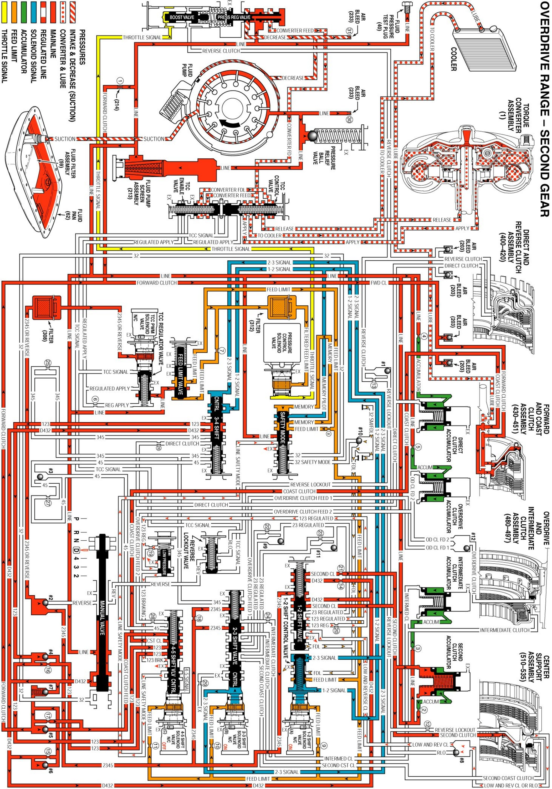

Overdrive Range, Second Gear
Overdrive Range, Second Gear
As vehicle speed increases, the transmission control module (TCM) receives input signals from both the input and ouput speed sensors, the throttle position (TP) sensor and other vehicle sensors to determine the precise moment to energize or "turn ON" the 1-2 shift solenoid (SS) valve.
Second Clutch Applies
1-2 Shift Solenoid (SS) Valve
- The 1-2 SS valve is energized, allowing feed limit fluid to enter the 1-2 signal fluid circuit. 1-2 signal fluid, together with 1-2 shift control valve spring (367) force, overcomes 2-3 signal fluid pressure and moves the 1-2 shift control valve (366) to the released position. This blocks feed limit fluid from entering the FDL fluid circuit.
1-2 Shift Valve
- FDL fluid is exhausted from the 1-2 shift valve (387) and 1-2 shift valve spring (388) force moves the valve to the released position to allow D432 fluid to enter the second clutch and 2345 fluid circuits.
Second Clutch
- Second clutch fluid is directed to the second clutch piston to apply the second clutch plates and achieve Second gear.
Shift Accumulator
Second Clutch Accumulator
- Second clutch fluid is also sent to the second clutch accumulator assembly. Second clutch fluid, together with accumulator spring force, moves the second clutch accumulator piston against accumulator fluid pressure to cushion the apply of the second clutch.
Fluid Pressure Directed in Preparation for a Shift to Third Gear
2-3 Shift Valve
- 2345 fluid is routed to the 2-3 shift valve (371) where it is blocked by the valve in preparation for an updshift to third gear.
Torque Converter Clutch Released
#2 Ball Check Valve
- 2345 fluid seats the ball check valve against the reverse passage and enters the 2345 or reverse fluid circuit.
TCC PWM Solenoid Valve
- 2345 or reverse fluid is directed through the TCC PWM solenoid valve filter to the TCC PWM solenoid valve. However, depending on the shift pattern, the TCM keeps the pulse width modulated (PWM) solenoid de-energized blocking filtered 2345 or reverse fluid from entering the TCC signal fluid circuit, thereby keeping the torque converter clutch released.
Overdrive Range, Second Gear
Overdrive Range, Second Gear:
